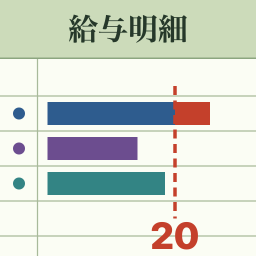

週20時間が見えるシフト給料
今週は何時間？ 線まであと何時間？ シフトを入れると、勤務先ごとの週の時間と給料の見込みが分かります。
アルバイト・パートのシフトを月のカレンダーに入れると、勤務先ごとに給料の見込みを給与明細の形で出します。
- 週の時間を勤務先ごとに帯で見せ、週20時間の線を引く。最初の画面に今週の時間が勤務先ごとに出て、線まであと何時間か・何時間越えたかが分かります。カレンダーの週の行の右にも、その週の時間が出ます。線の時間は変えられます
- 時給を「この日から ◯円」と日付で変えられる。最低賃金が10月の途中から上がるときも、その日からのシフトだけを新しい時給で数えます。明細では時給ごとに行が分かれます
- 給与明細の形の見込み。締め日・支払日・交通費・深夜（22時〜5時）と1日8時間を超えた分の25%増しを、勤務先ごとに入れられます。出勤日数・働いた時間・日ごとの一覧も出ます
- 年の合計は支払日で数える。103万円・130万円などの年の目安の線を選ぶと、あといくらかが出ます
- シフトはまとめて入れられる。早番・遅番などのひな形を押すだけ。同じシフトを、カレンダーで選んだほかの日にもまとめて入れられます
- 登録・課金はありません。データはこの端末の中だけに保存し、ファイルに書き出して機種変更のときに読み込めます。画面のいちばん下に小さな広告が出ます（画面いっぱいの広告・動画の広告は出しません）
税や社会保険の線は目安です。どの線が当てはまるかは人によって違います。くわしくは勤務先・税務署・年金事務所にお聞きください。